<title>Новый стиль шиномонтажа</title>
<meta name="claude:viewport-fit-sides" content="cover">
<link rel="preconnect" href="https://fonts.googleapis.com"><link rel="preconnect" href="https://fonts.gstatic.com" crossorigin>
<link href="https://fonts.googleapis.com/css2?family=Golos+Text:wght@400;500;600;700;800&family=JetBrains+Mono:wght@500;700&display=swap" rel="stylesheet">
<style>
/* Раскладка: узкая колонка текста; у каждого варианта слева телефон (вживую по кнопке), справа описание, кадры и вид на компьютере. */
:root{
  --bg:#f3f3f1;--surface:#ffffff;--ink:#141416;--muted:#62626a;--line:#dddcd8;--accent:#1f5bd8;--good:#16804a;--warn:#a6540a;--frame:#0b0b0c;
  --f-text:"Golos Text",system-ui,-apple-system,"Segoe UI",sans-serif;--f-mono:"JetBrains Mono",ui-monospace,Menlo,monospace;
}
@media (prefers-color-scheme:dark){:root:not([data-theme="light"]){--bg:#101012;--surface:#18181b;--ink:#efefec;--muted:#a1a1a8;--line:#2c2c31;--accent:#7aa2ff;--good:#5fd18f;--warn:#f0a35a;--frame:#000;color-scheme:dark}}
:root[data-theme="dark"]{--bg:#101012;--surface:#18181b;--ink:#efefec;--muted:#a1a1a8;--line:#2c2c31;--accent:#7aa2ff;--good:#5fd18f;--warn:#f0a35a;--frame:#000;color-scheme:dark}
*{box-sizing:border-box}
body{background:var(--bg);color:var(--ink);font:400 16px/1.55 var(--f-text);-webkit-font-smoothing:antialiased}
.wrap{max-width:1120px;margin:0 auto;padding-left:max(16px,env(safe-area-inset-left,0px));padding-right:max(16px,env(safe-area-inset-right,0px));padding-block:36px 64px}
h1,h2,h3{text-wrap:balance;margin:0}
h1{font:800 clamp(30px,6vw,46px)/1.05 var(--f-text);letter-spacing:-.03em}
h2{font:700 clamp(24px,4vw,32px)/1.1 var(--f-text);letter-spacing:-.02em}
h3{font:700 17px/1.3 var(--f-text)}
p{margin:0}
.lead{font-size:18px;max-width:62ch;color:var(--muted);margin-top:14px}
.lead b{color:var(--ink);font-weight:600}
a{color:var(--accent)}
.mono{font-family:var(--f-mono)}
img{display:block;max-width:100%;height:auto}

.before{margin-top:34px;display:grid;grid-template-columns:minmax(0,180px) minmax(0,1fr);gap:16px;align-items:start;padding:18px;border:1px solid var(--line);border-radius:16px;background:var(--surface)}
.before figure{margin:0}
.before .txt{grid-column:1/-1;display:flex;flex-wrap:wrap;gap:4px 12px;align-items:baseline}
.before .txt p{color:var(--muted);font-size:15px}
.shot{border-radius:12px;overflow:hidden;background:var(--frame);border:1px solid var(--line)}

.dir{margin-top:56px;padding-top:28px;border-top:1px solid var(--line);display:grid;grid-template-columns:330px minmax(0,1fr);grid-template-areas:"phone head" "phone info";gap:20px 36px;align-items:start}
.dir>.head{grid-area:head}.dir>.phone{grid-area:phone}.dir>.info{grid-area:info}
.phone{position:sticky;top:calc(16px + env(safe-area-inset-top,0px))}
.screen{position:relative;width:100%;aspect-ratio:390/844;border-radius:30px;overflow:hidden;background:var(--frame);border:8px solid var(--frame);box-shadow:0 0 0 1px var(--line)}
.screen img{position:absolute;inset:0;width:100%;height:100%;object-fit:cover;object-position:top}
.screen iframe{position:absolute;left:0;top:0;width:390px;height:844px;border:0;transform-origin:0 0;background:#000}
.ph-actions{display:flex;flex-wrap:wrap;gap:8px;margin-top:12px}
.btn{appearance:none;display:inline-flex;align-items:center;gap:8px;min-height:42px;padding:0 16px;border-radius:999px;border:1px solid var(--line);background:var(--surface);color:var(--ink);font:600 14.5px var(--f-text);text-decoration:none;cursor:pointer}
.btn.main{background:var(--ink);color:var(--bg);border-color:var(--ink)}
.btn:focus-visible{outline:2px solid var(--accent);outline-offset:2px}
.info{min-width:0;display:grid;gap:20px}
.head{display:grid;gap:8px}
.like{font:500 13px/1 var(--f-mono);color:var(--muted)}
.about{max-width:64ch;font-size:16.5px}
.facts{display:grid;grid-template-columns:repeat(3,minmax(0,1fr));gap:10px}
.fact{padding:12px 14px;border-radius:12px;background:var(--surface);border:1px solid var(--line)}
.fact small{display:block;font:500 12px/1.3 var(--f-mono);color:var(--muted);margin-bottom:4px}
.fact b{font-weight:600;font-size:15px;line-height:1.35;display:block}
.frames figcaption{display:grid;grid-template-columns:repeat(4,minmax(0,1fr));gap:12px;margin-top:8px;font-size:13.5px;color:var(--muted);line-height:1.4}
.frames figcaption b{display:block;color:var(--ink);font:700 12.5px var(--f-mono)}
figure{margin:0}
.lbl{font:600 13px/1 var(--f-text);color:var(--muted);margin-bottom:8px}

.table-wrap{overflow-x:auto;margin-top:18px;border:1px solid var(--line);border-radius:14px;background:var(--surface)}
table{border-collapse:collapse;width:100%;min-width:720px;font-size:15px}
th,td{text-align:left;padding:12px 14px;border-bottom:1px solid var(--line);vertical-align:top}
tr:last-child td{border-bottom:0}
th{font:600 13px var(--f-text);color:var(--muted)}
td:first-child{font-weight:700;white-space:nowrap}
.chip{display:inline-block;font:600 12.5px/1 var(--f-text);padding:5px 8px;border-radius:999px;border:1px solid currentColor;margin-right:6px;white-space:nowrap}
.chip.good{color:var(--good)}.chip.warn{color:var(--warn)}
.rec{margin-top:56px;padding:24px;border-radius:18px;background:var(--surface);border:1px solid var(--line);display:grid;gap:14px}
.rec ul{margin:0;padding-left:20px;display:grid;gap:8px;max-width:70ch}
.note{font-size:14.5px;color:var(--muted);max-width:70ch}

@media (max-width:860px){
  .dir{grid-template-columns:minmax(0,1fr);grid-template-areas:"head" "phone" "info";gap:18px}
  .phone{position:static;max-width:320px}
  .facts{grid-template-columns:minmax(0,1fr)}
  .frames figcaption{grid-template-columns:repeat(2,minmax(0,1fr))}
  .before{grid-template-columns:minmax(0,120px) minmax(0,1fr)}
}
@media (prefers-reduced-motion:no-preference){.btn{transition:transform .3s cubic-bezier(.22,1,.36,1)}.btn:active{transform:scale(.98)}}
</style>

<main class="wrap">
  <h1>Новый стиль вместо «Тёмного»</h1>
  <p class="lead">Четыре варианта первого экрана с эффектом «как дорогой автосалон». Все на данных демо <b>Шиномонтаж «Колесо»</b>, запись и цены те же. Нажмите <b>«Смотреть вживую»</b> под телефоном, чтобы увидеть анимацию, или откройте вариант на весь экран.</p>

  <section class="before" aria-labelledby="before-h">
    <div class="txt"><h3 id="before-h">Сейчас</h3><p>«Тёмный»: серый фон, плоская шина, без движения</p></div>
    <figure class="shot"></figure>
    <figure class="shot"></figure>
  </section>

  <section class="dir" id="vitrina" aria-labelledby="h1d">
    <div class="head"><p class="like">похоже на Apple iPhone Pro и Resend</p><h2 id="h1d">1. Витрина</h2></div>
    <div class="phone">
      <div class="screen" data-src="1-vitrina.html">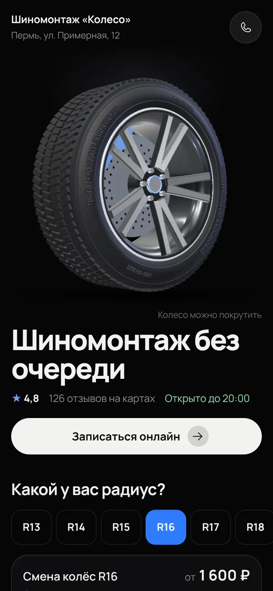</div>
      <div class="ph-actions"><button class="btn main" type="button" data-live>Смотреть вживую</button><a class="btn" href="1-vitrina.html" target="_blank" rel="noopener">На весь экран</a></div>
    </div>
    <div class="info">
      <p class="about">Колесо как экспонат в салоне: чёрный бархат, свет сверху, отражение на полу. Объёмная шина с литым диском, на боковине название и город сервиса. Спокойно и дорого. Кнопки белые, цвет сервиса виден на тормозном суппорте и в выборе времени.</p>
      <div class="facts">
        <div class="fact"><small>Касание</small><b>Колесо делает оборот. На компьютере поворачивается за мышкой</b></div>
        <div class="fact"><small>Вес анимации</small><b>6 КБ, без картинок и библиотек</b></div>
        <div class="fact"><small>Без анимации</small><b>Колесо стоит под светом, всё видно сразу</b></div>
      </div>
      <figure class="frames"><p class="lbl">Анимация по кадрам</p><div class="shot">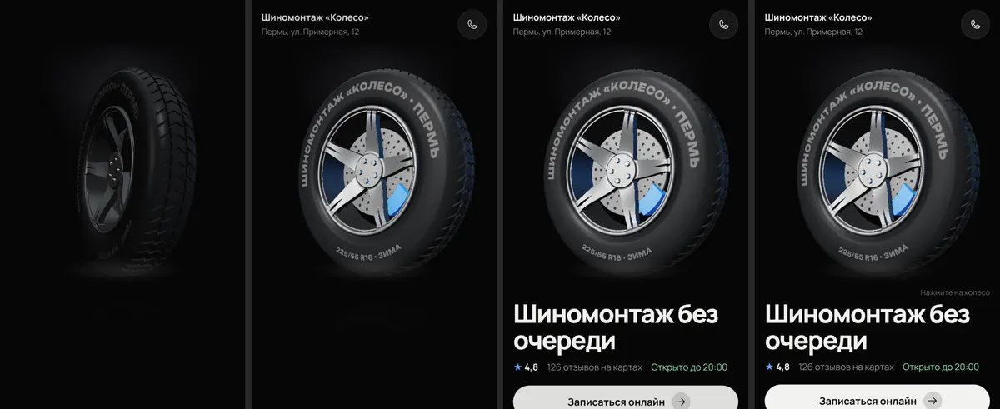</div>
        <figcaption><span><b>0,25 с</b>Темно, колесо стоит протектором к нам</span><span><b>0,9 с</b>Зажигается свет, колесо разворачивается</span><span><b>1,6 с</b>Появляются заголовок и кнопка</span><span><b>4 с</b>Колесо покачивается, блик ходит по диску</span></figcaption></figure>
      <figure><p class="lbl">На компьютере</p><div class="shot">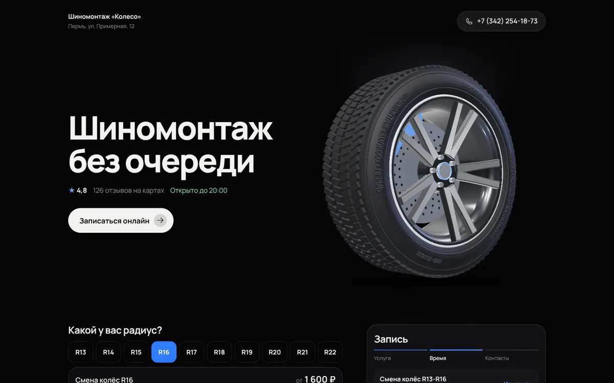</div></figure>
    </div>
  </section>

  <section class="dir" id="skaner" aria-labelledby="h2d">
    <div class="head"><p class="like">похоже на ThreeTools</p><h2 id="h2d">2. Сканер</h2></div>
    <div class="phone">
      <div class="screen" data-src="2-skaner.html">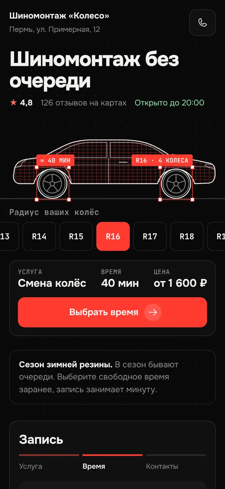</div>
      <div class="ph-actions"><button class="btn main" type="button" data-live>Смотреть вживую</button><a class="btn" href="2-skaner.html" target="_blank" rel="noopener">На весь экран</a></div>
    </div>
    <div class="info">
      <p class="about">Как стенд диагностики: машина тонкими линиями, по ней проходит луч, рамки ловят колёса. Под машиной выбор радиуса, подписи сразу показывают время и цену. Самый полезный первый экран: запись начинается прямо в нём.</p>
      <div class="facts">
        <div class="fact"><small>Касание</small><b>Другой радиус: луч проходит снова, меняются подписи и цена</b></div>
        <div class="fact"><small>Вес анимации</small><b>3 КБ, обычная векторная графика</b></div>
        <div class="fact"><small>Без анимации</small><b>Машина уже в сетке, рамки на колёсах</b></div>
      </div>
      <figure class="frames"><p class="lbl">Анимация по кадрам</p><div class="shot">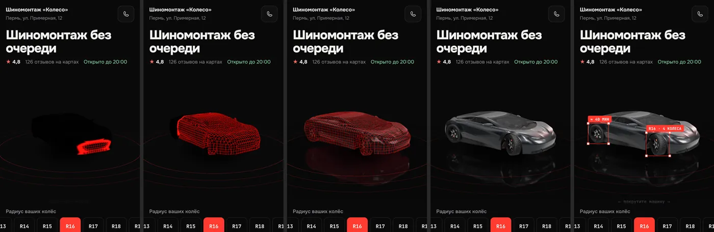</div>
        <figcaption><span><b>0,6 с</b>Машина прорисовывается линиями</span><span><b>1,5 с</b>Луч идёт слева направо, за ним сетка</span><span><b>2,1 с</b>Вся машина в сетке скана</span><span><b>3,6 с</b>Рамки ловят колёса: радиус и время</span></figcaption></figure>
      <figure><p class="lbl">На компьютере</p><div class="shot">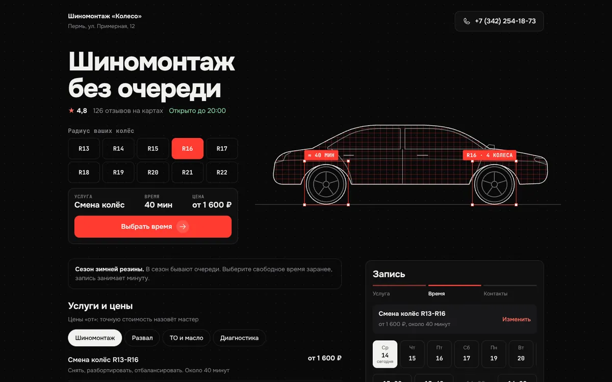</div></figure>
    </div>
  </section>

  <section class="dir" id="chasticy" aria-labelledby="h3d">
    <div class="head"><p class="like">похоже на Dala</p><h2 id="h3d">3. Частицы</h2></div>
    <div class="phone">
      <div class="screen" data-src="3-chasticy.html">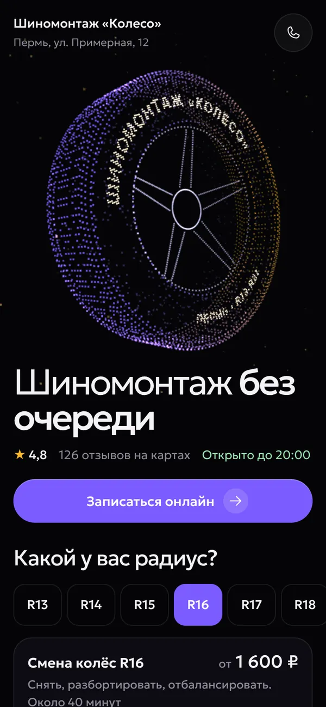</div>
      <div class="ph-actions"><button class="btn main" type="button" data-live>Смотреть вживую</button><a class="btn" href="3-chasticy.html" target="_blank" rel="noopener">На весь экран</a></div>
    </div>
    <div class="info">
      <p class="about">Шина из тысяч светящихся точек собирается из облака и медленно вращается. Название сервиса выложено точками на боковине. Самый необычный вариант, больше похож на сайт технологической компании, чем на автосервис.</p>
      <div class="facts">
        <div class="fact"><small>Касание</small><b>Точки разбегаются от пальца и мягко возвращаются</b></div>
        <div class="fact"><small>Вес анимации</small><b>3 КБ, около 3 тысяч точек</b></div>
        <div class="fact"><small>Без анимации</small><b>Шина из точек стоит, надпись читается</b></div>
      </div>
      <figure class="frames"><p class="lbl">Анимация по кадрам</p><div class="shot">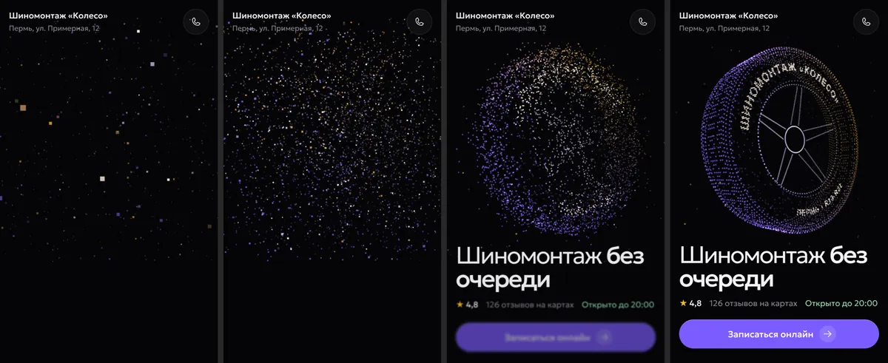</div>
        <figcaption><span><b>0,3 с</b>Точки рассыпаны по экрану</span><span><b>1 с</b>Облако стягивается</span><span><b>1,8 с</b>Шина почти собралась</span><span><b>4 с</b>Шина с названием вращается</span></figcaption></figure>
      <figure><p class="lbl">На компьютере</p><div class="shot">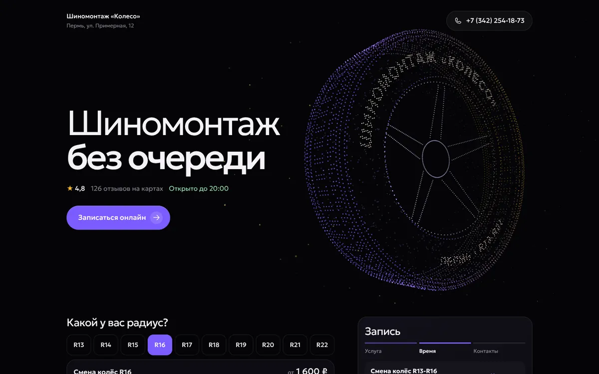</div></figure>
    </div>
  </section>

  <section class="dir" id="drajv" aria-labelledby="h4d">
    <div class="head"><p class="like">похоже на Ferrari</p><h2 id="h4d">4. Драйв</h2></div>
    <div class="phone">
      <div class="screen" data-src="4-drajv.html">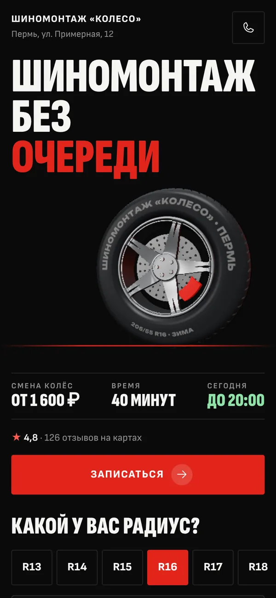</div>
      <div class="ph-actions"><button class="btn main" type="button" data-live>Смотреть вживую</button><a class="btn" href="4-drajv.html" target="_blank" rel="noopener">На весь экран</a></div>
    </div>
    <div class="info">
      <p class="about">Чёрный и сигнальный красный, огромные узкие буквы. Колесо въезжает с разгона со смазом, тормозит и встаёт. Под ним цена, время работы и кнопка. Энергично, как у спорткара, при этом строгая сетка и прямые углы.</p>
      <div class="facts">
        <div class="fact"><small>Касание</small><b>Колесо уезжает и въезжает заново</b></div>
        <div class="fact"><small>Вес анимации</small><b>6 КБ, та же объёмная шина, что в Витрине</b></div>
        <div class="fact"><small>Без анимации</small><b>Колесо стоит на красной линии</b></div>
      </div>
      <figure class="frames"><p class="lbl">Анимация по кадрам</p><div class="shot">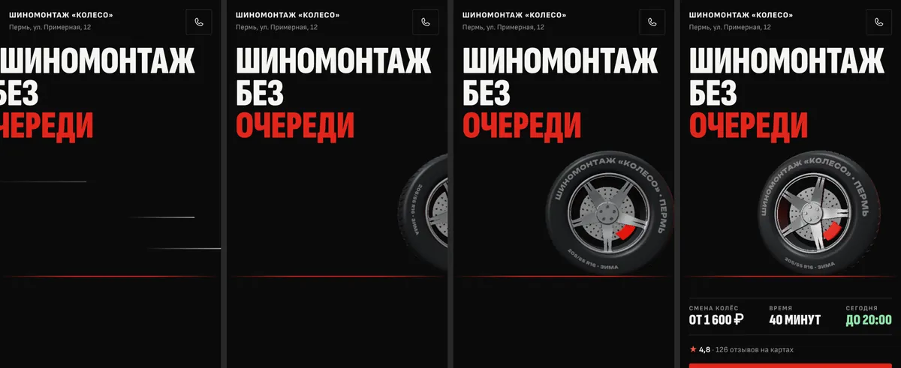</div>
        <figcaption><span><b>0,4 с</b>Заголовок въезжает, полосы скорости</span><span><b>0,9 с</b>Колесо въезжает справа со смазом</span><span><b>1,4 с</b>Тормозит</span><span><b>3,5 с</b>Встало, цена и кнопка</span></figcaption></figure>
      <figure><p class="lbl">На компьютере</p><div class="shot">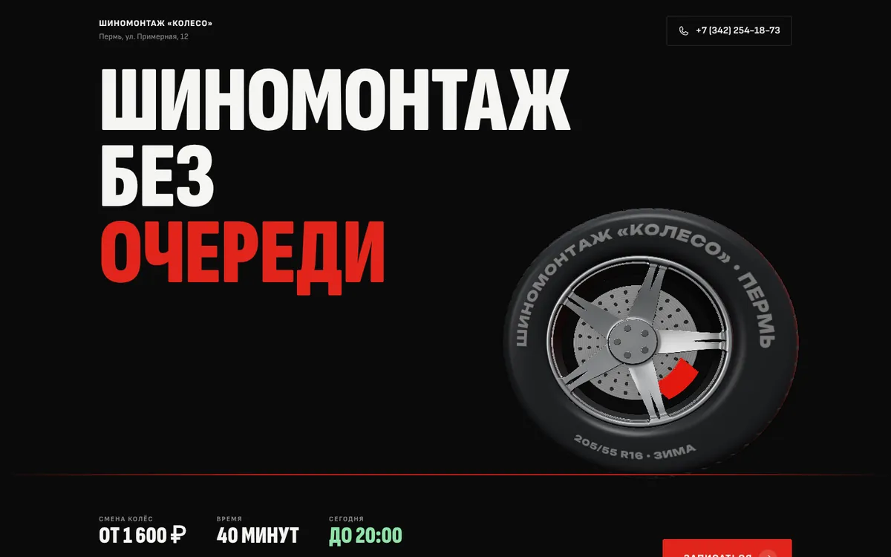</div></figure>
    </div>
  </section>

  <section style="margin-top:56px" aria-labelledby="cmp-h">
    <h2 id="cmp-h">Сравнение</h2>
    <div class="table-wrap">
      <table>
        <thead><tr><th>Вариант</th><th>Вау в первом экране</th><th>Дешёвый телефон</th><th>Владелец увидит «своё»</th><th>Запись</th></tr></thead>
        <tbody>
          <tr><td>Витрина</td><td><span class="chip good">сильно</span>объёмная шина под светом</td><td><span class="chip warn">средне</span>рисует видеокарта, при тормозах снижается чёткость</td><td><span class="chip good">да</span>его название на шине, спокойный тон</td><td>кнопка в первом экране, дальше как сейчас</td></tr>
          <tr><td>Сканер</td><td><span class="chip warn">средне</span>эффектно, но плоская графика</td><td><span class="chip good">легко</span>обычная векторная графика</td><td><span class="chip good">да</span>про машину и колёса</td><td>радиус и цена прямо в первом экране</td></tr>
          <tr><td>Частицы</td><td><span class="chip good">сильно</span>самый необычный</td><td><span class="chip warn">средне</span>3 тысячи точек каждый кадр</td><td><span class="chip warn">может не узнать</span>похоже на IT-компанию</td><td>кнопка в первом экране</td></tr>
          <tr><td>Драйв</td><td><span class="chip good">сильно</span>въезд колеса, крупный шрифт</td><td><span class="chip warn">средне</span>та же шина, что в Витрине</td><td><span class="chip warn">на любителя</span>громко, кому-то «слишком спорт»</td><td>цена, время и кнопка в первом экране</td></tr>
        </tbody>
      </table>
    </div>
  </section>

  <section class="rec" aria-labelledby="rec-h">
    <h2 id="rec-h">Что советую</h2>
    <ul>
      <li><b>Витрину</b> как основу. Даёт вау с первой секунды и при этом спокойная. Владелец видит своё название на дорогой шине, и это подойдёт любому шиномонтажу, от гаража до большого центра.</li>
      <li>Взять из <b>Сканера</b> радиус в первом экране: нажали R17, и надпись на шине и цена сразу поменялись. Запись станет ещё быстрее.</li>
      <li><b>Драйв</b> оставить запасным: та же шина, но громче. Можно сделать его отдельным стилем позже, если владельцам захочется поярче.</li>
    </ul>
    <p class="note">Проверено в браузере на ширине 390 и 1440, в том числе в режиме «уменьшить движение» (там всё стоит, анимаций нет). Горизонтальной прокрутки нет. На настоящем дешёвом Android ещё не проверял, сделаю после выбора: если телефон не успевает рисовать колесо, чёткость снижается сама.</p>
  </section>
</main>

<script>
// Живой просмотр: в телефон загружается сам макет. Одновременно работает только один, чтобы не грузить телефон
let open = null;
const fit = (scr) => { const f = scr.querySelector("iframe"); if (f) f.style.transform = `scale(${scr.clientWidth / 390})`; };
document.querySelectorAll("[data-live]").forEach((b) => b.addEventListener("click", () => {
  const scr = b.closest(".phone").querySelector(".screen");
  if (open && open !== scr) { open.querySelector("iframe")?.remove(); open.querySelector("img").hidden = false; open.closest(".phone").querySelector("[data-live]").textContent = "Смотреть вживую"; }
  const cur = scr.querySelector("iframe");
  if (cur) { cur.src = scr.dataset.src; b.textContent = "Ещё раз"; return; }
  const f = document.createElement("iframe"); f.src = scr.dataset.src; f.title = "Живой макет"; f.loading = "eager";
  scr.querySelector("img").hidden = true; scr.append(f); fit(scr); open = scr; b.textContent = "Ещё раз";
}));
addEventListener("resize", () => open && fit(open));
</script>
